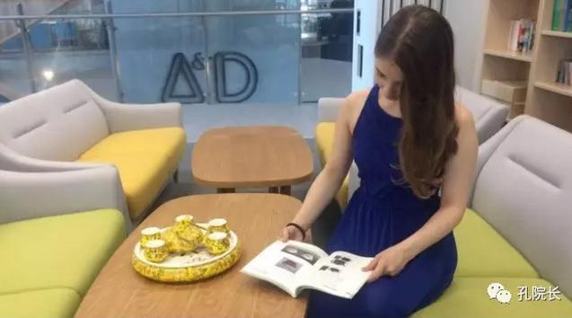
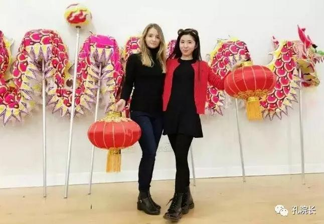
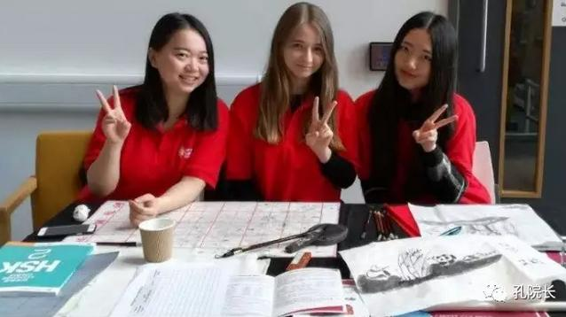
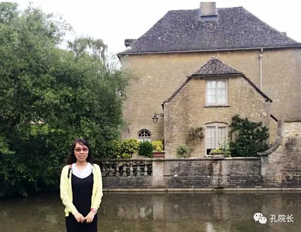

每日一篇——教师感悟/ 英国女孩 艾莉学习中文的故事
 970
970
来源：原创 作者：卢超
2015年8月，我在北京第一次见到艾莉。当时她能说的汉语就是自己的名字“艾莉”了。她来北京参加为期一个月的中文文化夏令营。
第二次碰见她是在校园广场舞的人群里，虽然还有点放不开，但还是很佩服她的勇敢尝试。和她简单交流后才知道短短的时间里她交了很多中国朋友，参加了校园微喜剧拍摄、校园歌手大赛等校园活动，那时她的中文依然很蹩脚，但是敢于开口说了。
第三次见到她是在英国，她报名参见德蒙福特大学孔子学院中文学习班。其间她的中文老师说她汉语进步很快。真正让我吃惊的是她来我们办公室借书，开口就是汉语，如果不抬头，几乎猜不出来者是外国人。不到两年的时间，她汉语的进步让我们在场的每一个中国人都震惊了。
本以为会听到一个“头悬梁、锥刺股”般的励志故事，但是听完她的分享，我只能用轻松愉悦来形容她的中文学习过程了。
艾莉喜欢和认可中国文化和中国的生活处世原则，所以大学里喜欢结交来自中国的朋友，从一开始坐在中国朋友圈几乎全靠猜慢慢过度到半猜半懂，再到现在的大部分中文交流，在一年多的时间里，艾莉的中文发生了翻天覆地的变化。
除了和中国朋友聊天，艾莉酷爱中国食物和中国茶。她会跟着朋友学做中国菜、学泡中国茶，而茉莉花茶是她的最爱。这真是应验了我初见她时的印象，素雅却迷人。虽然艾莉从小受英国茶文化的熏陶，但是她更欣赏中国茶文化，也更喜欢品茗中国茶。她对茉莉花茶的喜爱源于茉莉花茶既有茉莉的鲜灵芳香，又有绿茶的浓郁清爽。

她是大学里中国社团活动的积极分子，比如元宵节、春节、孔子学院开放日、太极晨练等，都能见到她的身影；慢慢地成了孔院在大学的代言大使。热爱中国文化，泡孔院图书馆成了艾莉的日常活动，抓住一切机会和大家练习中文。课堂里、校园里、中国文化活动中甚至是微信朋友圈里，她都积极尝试中文聊天。她也会在YouTube上观看中国的一些流行文艺节目《爸爸去哪儿》、《我是歌手》，除此之外她也是中国影视剧的迷妹。
每日听、说、读中文成了她的日常惯例。直到有一天她和我们交流中国文化和英国文化的异同时，我不经意间发现了她讲汉语时萌态十足，而讲英语时则冷静理性。用中文聊天时，她使用着和我们相仿的身体语言，但是用英语时却不自觉间和我们拉开了距离。

艾莉对发生在她身上的变化浑然不知。我们让她用中英两种语言表达类似的意思，结果还是中文的萌，英文的魅。我们邀请她按照中国女孩和英国女孩的招牌性动作照相，和大多数中国女孩一样她也举起了剪刀手，萌态十足。看着艾莉在中英文之间无意切换个不同的姿态，我这个听众真有点穿越中国和英国的错觉。
问她原因，她说自己是把中文当文化学的，因此用中文表达时，我就应该汲取中文的文化，而通过影视作品、社交媒体、网络微课堂、阅读孔院的文化书籍等让艾莉潜移默化间接受并认可中国年轻女孩的萌文化现象。同样地，很小从立陶宛来英国，英语是她的第一外语，多年的英国生活早已经让英国文化深入内心，因此当转换成英语时，她无意间会切换到英语的交流文化中。记得有人说学好一门外语，世界就会被扩大了一倍。这在艾莉身上是真真切切地应验了。

总结一下艾莉同学的中文学习经验：
学中文要眼尖，耳明，嘴勤，手快。只要多读，多记，多讲，多写，自有水到渠成之日；通过文化来学习语言，语言也会学得更好更远。挖掘每一门语言背后独特的魅力，了解背后的精神世界，让语言表达力和思想洞察力同步相长。学习中文需要学习者理解中文思维模式，这是用中文表达思想的基础。
作为一名汉语教师，我也深知好学生都不是在课堂上由老师“教”出来，而是靠老师在课堂内外“导”出来的。
艾莉的身上也让我们切身理解了成功的跨文化交流应该是了解不同文化的异同点，建立不同文化异同意识，使跨文化交际双方在平等、理解的基础上顺利推进。最后，跨文化教育的最终目的在于要通过教育鼓励大家互相理解不同文化差异、尊重差异，承认文化差异的价值，理解不同的生活方式选择，达到和谐共处。
讲着一口流利中文的艾莉打算在中国南京开始新的征程，我们也祝福她在更宽广的世界里过得更美好和幸福。 借用著名社会学家费孝通的一句名言：各美其美，美人之美，美美与共，天下大同。我们送给艾莉一句话：美中文之萌，美英文之魅，美美与共，天下大同。
作者简介：
卢超，英国德蒙福特大学孔子学院汉语教师，在孔子学院任职时间是2015年10月到2017年 8月。在孔子学院主要负责德蒙福特大学汉语学分课中级课程、成人初级中级高级汉语课，同时负责孔院文化活动策划、组织和执行。
